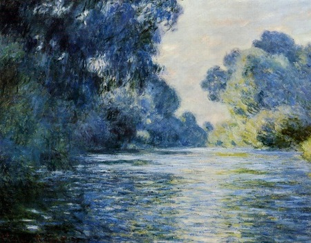
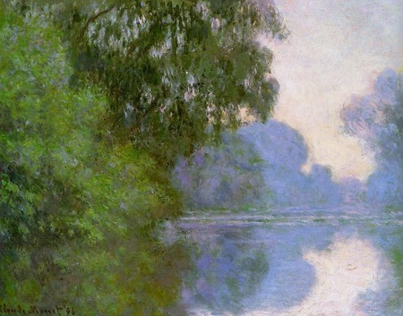

An Introduction to Art (Revised)
An 8th grade teacher of mine used the quote “All geniuses die young” by Groucho Marx to emphasize the countless numbers of artists who would eventually end their own lives. Either because of depression, sadness or due to the result of their unsuccessful careers. Although, funny thing is, most of these artists are now one of the most well-known and sought after artists of all time. Some revolutionized the arts. For example, Claude Monet who would paint landscapes at different times to not only encompass the differnet array of colors but the emotion it would entail on the onlooker.
A cold, melancolic lake that would leave you with the chills both visually and psychologically.

But then Claude replaces the cold and dreary colors of the early morning with natural, bright colors that entail the complete opposite of the painting above.

But what is art?
Paintings long ago were blunt, merely just pictures. But as humans progressed we ended up forming different types of art, one being “Expressionism”. A type of art that uses a variety of pictures, styles and techniques to show emotion. These sorts of paintings can express depression, nihlism, existenlism etc. These pieces would often use more dreary and dark colors to protray the emotions that the artist that drew it wanted it to show. There is also the art of using objects, either sculpting or with a vast arrary of unconventional techniques. These same techniques have been applied to some of Sun Yuan and Peng Yu’s pieces. One of these pieces being of a living “curtain” of crustaceans, reptiles and amphibians. Another being one called “Can’t Help Myself” which is one of the rare instances of robotics being used in art. The robot itself is a huge arm-like structure that is stuck to a platform with a square shaped blade that keeps a red substance in a designated area. It’ll do this whilst simultaneously doing a few dances here and there. But as time goes on it starts to rust and get covered in what it was trying to keep from straying away this causes it to move slower than it did before, hindering it’s movement and speed; a shell of it’s former self. Some say it’s suppose to display authoritarianism. Some say it’s suppose to show how replaceable how every person in the workforce is. But when it comes to art there is no set meaning behind a piece. It’s all a flurry of emotions; by the way, I’d prefer not to show the image as it literal just looks like a murder just occured. But if you’d ever like to see it just search up "Can’t Help Myself" in the search engine of your choice and it should appear.
How do people enjoy art?
Personally, I enjoy art because it’s able to conceptulise what I feel and at times, comforted knowing that maybe somebody else out there knows exactly how I feel. Just buy a ticket to an art exhibiton or musem. Look at pieces, perhaps write their names on a notepad to search up online and start up a discussion of what the piece encompasses. Hope you’ve decided to take up on the hobby!
If you’re having trouble in finding artists or just want a background on the artists on some pieces. Here are a few channels I’ve found that have analyses on some pieces.